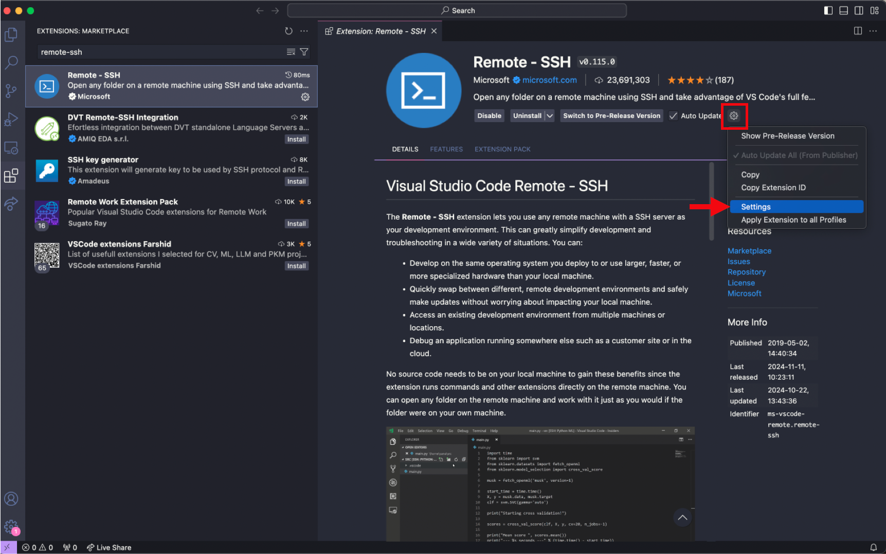
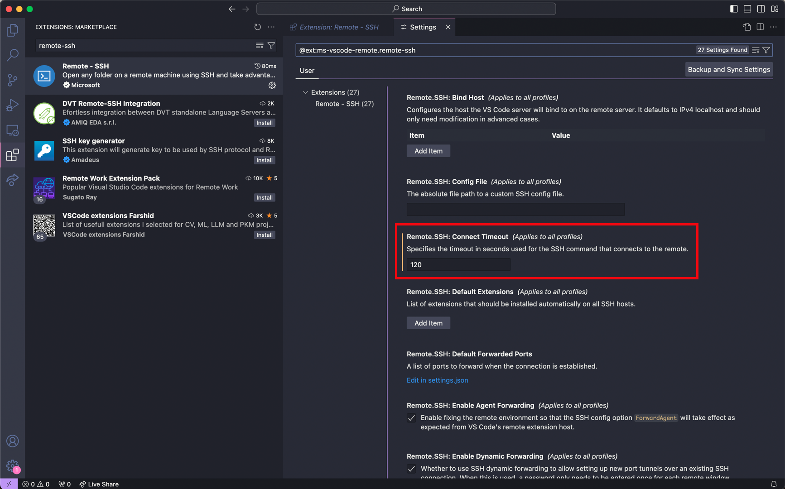
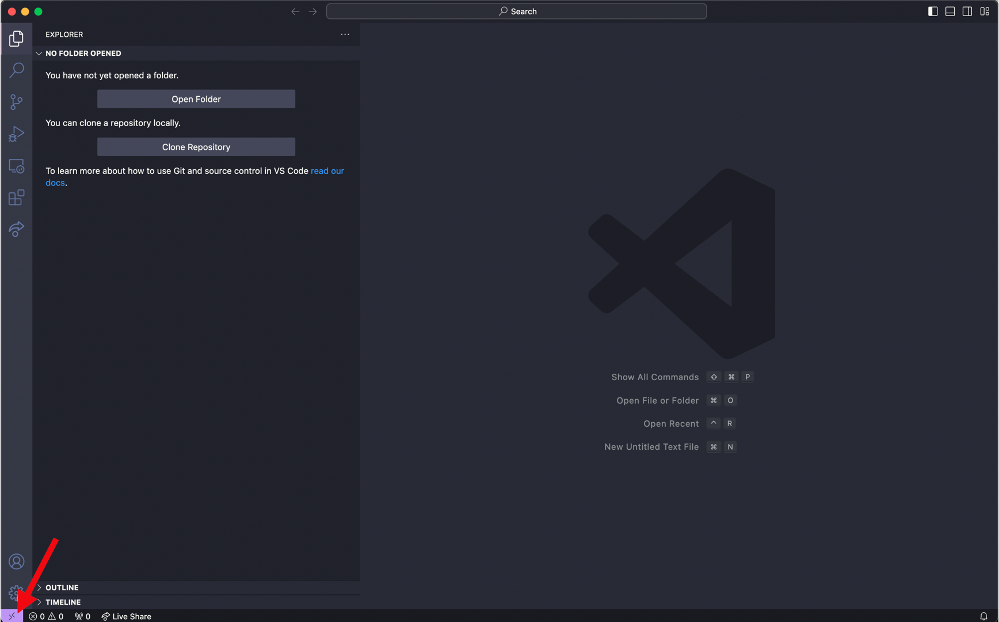

##| eval: false
<user_name>@<server address>Best Practices and Send-Off
Say goodbye to the workshop and reflect on your new-found superpowers
Slides
VSCode
VSCode is a code text editor application that provides an easy-to-use interface for viewing and writing code/scripts. This section will detail how to 1) install VSCode as an application on your computer, 2) install VSCode extensions and 3) setup launching VSCode as an interface to view and edit your files on the O2 cluster.
Install VSCode application
To install VSCode on your computer, use this link.
Install VSCode extensions
VSCode has a number of extensions that allow each user to customize their own coding experience. We recommend the installation of three extensions:
Rainbow CSV- identifies “,” as the separator in CSV files, highlights each column with a different colorVSCode-pdf- view PDF files directly within the VSCode interfaceRemote-SSH- allows users to login and access their own HPC cluster and view their files through the VSCode interface (see next section)
To install extensions:
Navigate to the toolbar on the far left of the VSCode interface and click on the icon that resembles four squares.
Use the search bar that has the caption “Search Extensions in Marketplace” to find extensions that you like and install each of them individually.
An additional step for
Remote-SSHinstallation involves changing the connect timeout setting. As O2 login requires Duo authentication, there is often a slight delay and more time is needed to complete the authentication and login properly. To adjust this, please follow steps 4-6.Navigate to the extension page for
Remote-SSH(on the toolbar on the far left, select the icon with four squares, then input remote-ssh into the search bar)
Select the gear button and press Settings 
Input 120 seconds for the
Remote.SSH: Connect Timeoutparameter 
Setup remote access with VSCode
While logging into O2 on the terminal only provides a command-line interface and linux commands are needed to modify files, the main advantage of accessing O2 through VSCode is it allows users to easily view and edit their files in an interactive manner within the VSCode application.
After installation of VSCode and the Remote-SSH extension, establish a SSH connection to O2 through VSCode:
Press the bottom left purple icon to ‘Open a Remote Window’. This will prompt a few options to be displayed at the top near the search bar 
Select ‘Add New SSH Host’ and then input the following and enter
- Select
<path to config>/.ssh/configas the SSH configuration file to update - Input password for login
- Login complete (Note: login may take longer at the first instance because VSCode will download its own server.)
After setup, directly click the bottom left purple icon each time and input login credentials to launch O2 on VSCode each time.
Additional steps to not need pasword
After setting up VSCode, Remote-SSH extension and establishing a connection to O2 login node through VSCode, follow these steps to launch VSCode on a remote server.
- Generate SSH key on your own computer’s terminal with the following command. When prompted for file name, press enter to use the default file name. Enter a passphrase to protect your SSH keys.
##| eval: false
## input this line into your computer's terminal
ssh-keygen -t rsa
## sample output (See O2 documentation for reference)
Generating public/private rsa key pair.
Enter file in which to save the key (/USERHOME/.ssh/id_rsa):
Enter passphrase (empty for no passphrase):
Enter same passphrase again:
Your identification has been saved in /USERHOME/.ssh/id_rsa.
Your public key has been saved in /USERHOME/.ssh/id_rsa.pub.- Copy your computer’s SSH public key onto the O2 SSH authorized_keys file, which allows your computer and O2 to recognize each other
- Linux or Mac:
##| eval: false
## input this line into your computer's terminal
ssh-copy-id -i $HOME/.ssh/id_rsa.pub <user_name>@<server address>
## input O2 password and complete Duo authentication- Windows:
##| eval: false
## input this line into your computer's terminal
Get-Content "$env:USERPROFILE\.ssh\id_rsa.pub" | ssh <user_name>@<server address> "mkdir -p ~/.ssh && cat >> ~/.ssh/authorized_keys"
## input O2 password and complete Duo authenticationSnakemake
We could (and should!) do a whole workshop on using Snakemake for bioinformatics pipelines.
For now, take a look at their excellent documentation here: (https://snakemake.readthedocs.io/en/stable/index.html)[https://snakemake.readthedocs.io/en/stable/index.html]
And consider that AI tools are quite good at snakemake.
AI tools in 2025
https://chatgpt.com/ - Quite good but costs money to use the more powerful models.
https://chat.deepseek.com/ - Same performance as chatGPT’s o1 model, but for free as of today.
https://www.phind.com/ - This is an interesting one to watch, especially if you plan to use AI to help do the tinking part of your research, not just the coding part. Provides sources, and tries to synthesize more stuff together. Performs a lot better if you pay a subscription.